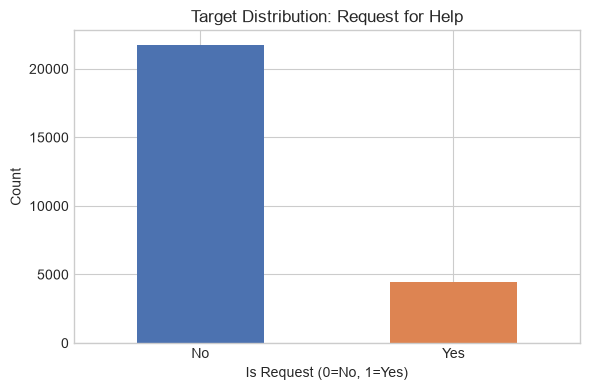
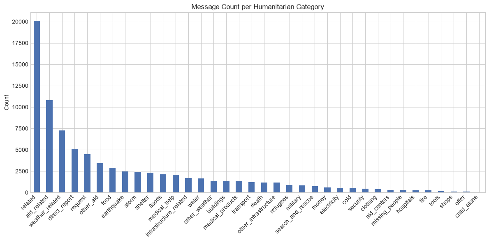
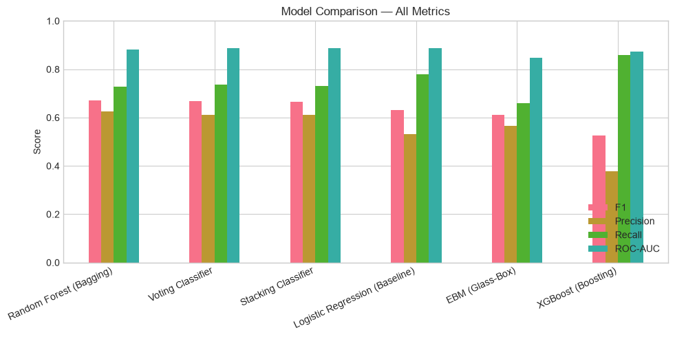
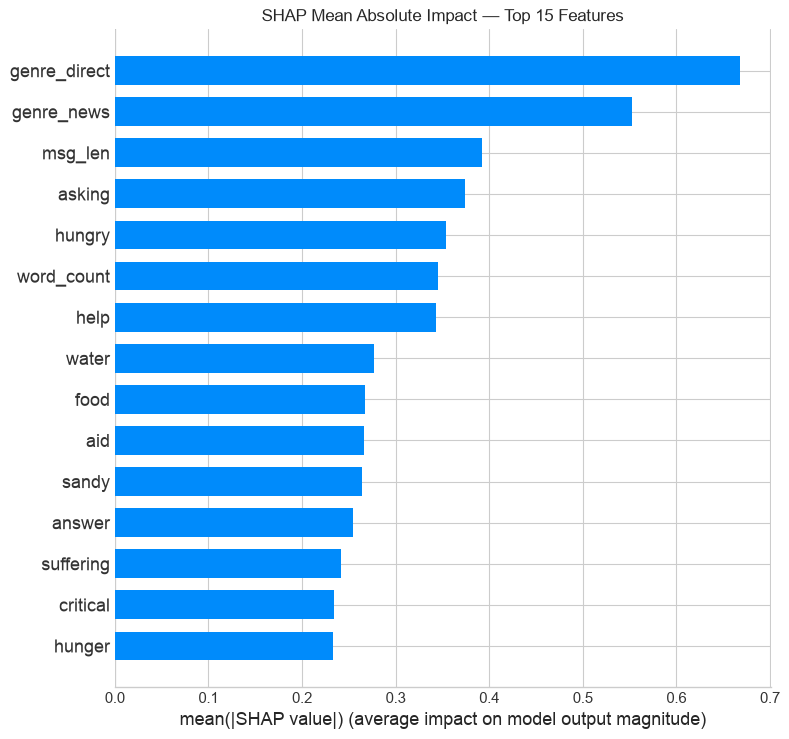
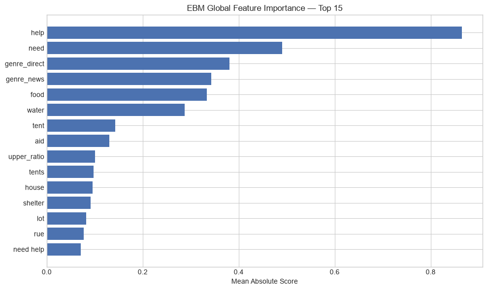
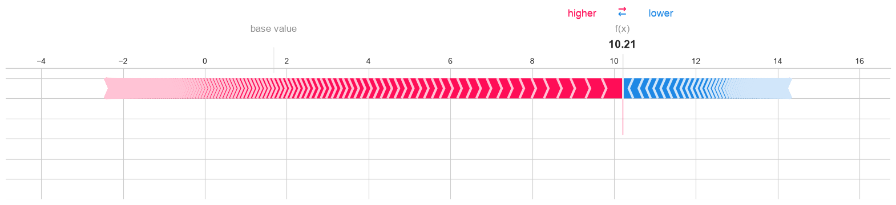

request ∈ {0, 1} (Urgent actionable need for food, clean water, medical aid, or search & rescue).
max_features=1000).!), question markers (?), uppercase intensity ratio.X_train.
| Model Architecture | Type | F1-Score | Recall | ROC-AUC |
|---|---|---|---|---|
| 🌲 Random Forest | Bagging | 0.6722 | 72.8% | 0.8804 |
| 🗳️ Voting Classifier | Soft Ensemble | 0.6684 | 73.6% | 0.8886 |
| 🧱 Stacking Classifier | Heterogeneous | 0.6653 | 73.0% | 0.8886 |
| 📈 Logistic Regression | Baseline | 0.6322 | 78.1% | 0.8887 |
| 🔍 EBM (Glass-Box) | GAM Splines | 0.6101 | 66.1% | 0.8479 |
| ⚡ XGBoost | Boosting | 0.5247 | 85.8% | 0.8727 |
✓ Ensemble Superiority: Bagging & Stacking significantly improve precision and stability over the baseline.

Top predictive words discovered through Shapley game theory:

Exact additive scoring without black-box approximations:

